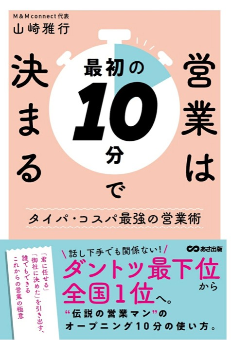

まもなく始まります ・ セールス勉強会 第3回
ようこそ。はじめに、4つのお願い
📷
できれば、カメラをONに
顔が見えると、場があたたまります
✏️
表示名を、お名前に変えてください
参加者一覧 › ご自分の名前 › 詳細 › 名前の変更
👂
顔出しが難しい方は、
お名前の前に「👂」を
お名前の前に「👂」を
「聞いています」の合図。聞き役での参加も大歓迎です
👏
リアクションは大きめに
拍手も 👍 も、どんどんお願いします
ここは学ぶ場であり、つながる場でもあります。
セールス勉強会 第3回 ・ 2026.10.17
「検討します」と
言われないために。
― 小さなイエスを積み重ねる ―
岡崎かつひろ
はじめに
こんなこと、していませんか
結婚してください
この商品、いかがですか？
！？
✕ 100%、断られます
…………やっていませんか？
セールス勉強会 第3回
今日の出発点
相手がまだ、
何ひとつイエスを出していないのに、
いちばん大きなイエスを取りにいっている。
「検討します」は、断りではありません。
「まだ、あなたを知りません」という意味です。
「まだ、あなたを知りません」という意味です。
今日の背骨
大きなイエスは、小さなイエスの上にしか乗らない
ラポール
「聞いてもいい」
「聞いてもいい」
小さな
イエス
イエス
小さな
イエス
イエス
小さな
イエス
イエス
大きな
イエス
（成約）
イエス
（成約）
いちばん最初のイエスは「この人の話を聞いてもいい」。
これがラポールです。
これがラポールです。
セールス勉強会 第3回
なぜ小さなイエスが効くのか
人は、一度言ったことと矛盾したくない
- 小さなイエスを口にした人は、そのあともイエスの側に立ち続けようとする自分の発言と行動を、一致させておきたいから
- これを一貫性の原理といいますロバート・チャルディーニ『影響力の武器』
- だから、先に小さなイエスを置いておくイエスセット話法／アセンディングクローズ
だんだん大きくしていく。一発で取りにいかない。
セールス勉強会 第3回
証拠になる実験
庭に、大きな「安全運転」の看板を立てさせてください
庭に大きな看板を立てさせてほしいと、いきなり頼む。OKは 17%。
別のグループには、先に「窓に小さなステッカーを」とだけ頼んだ。ほぼ全員がOK。
2週間後、同じ看板の話を持っていくと── Freedman & Fraser（1966）／フット・イン・ザ・ドア
別のグループには、先に「窓に小さなステッカーを」とだけ頼んだ。ほぼ全員がOK。
2週間後、同じ看板の話を持っていくと── Freedman & Fraser（1966）／フット・イン・ザ・ドア
17%
いきなり頼む
→
76%
先に小さなイエスをもらう
やったのは、先に小さなイエスを一つもらっただけ。
セールス勉強会 第3回
やってみると、こうなる
階段を4段つくってから、最後の一段を出す
✕ 一発で取りにいく
「この勉強会、
申し込みませんか？」
相手はまだ、一度もうなずいていません。
申し込みませんか？」
相手はまだ、一度もうなずいていません。
○ 積み上げる
「本を出したいと思われているんですよね？」→ はい
「企画書は、まだ書かれたことがない？」→ はい
「書き方を知りたいとは思われますか？」→ はい
「学べる場があるなら、のぞいてみたいですよね」→ はい
「実は、そういう場があるんです」
「企画書は、まだ書かれたことがない？」→ はい
「書き方を知りたいとは思われますか？」→ はい
「学べる場があるなら、のぞいてみたいですよね」→ はい
「実は、そういう場があるんです」
セールス勉強会 第3回
ここを間違えると、逆効果
どうでもいい質問でイエスを取らない
- 「今日は暑いですね」で3回うなずかせる、という古いやり方がありますいまは、すぐ気づかれます
- 気づかれた瞬間、それまでのイエスが全部無効になります人は、操られていると感じると反発する（心理的リアクタンス）
本当に効くイエス
相手が話した中身を、こちらが確認するイエス。
「つまり、いまは時間のほうが課題ということですね？」 →「そうです」
これは誘導ではなく、ちゃんと聞いていた証拠です。
「つまり、いまは時間のほうが課題ということですね？」 →「そうです」
これは誘導ではなく、ちゃんと聞いていた証拠です。
だから次は、聞き方の話をします。
セールス勉強会 第3回
最初のイエスをもらう
ラポールとは、好かれることではない
- 相手が「この人の話を聞いてもいい」と思っている状態いちばん最初の、いちばん大きな「小さなイエス」
- ここが取れていない相手からは、何を聞いてもイエスは出ません
- 相手が構えを解くのは、肯定されたと感じたときカール・ロジャーズ／無条件の肯定的関心
だから「しっかり聞く」ことが、いちばんの肯定になる。
セールス勉強会 第3回
なぜ、聞くと心が開くのか
人は自分のことを話しているとき、脳が喜んでいる
自分のことを話しているとき、脳の報酬系が活性化する。
食べ物やお金を受け取ったときと、同じ回路が反応する。 ハーバード大学 Tamir & Mitchell（2012）
食べ物やお金を受け取ったときと、同じ回路が反応する。 ハーバード大学 Tamir & Mitchell（2012）
つまり、聞くという行為そのものが、相手への報酬。
こちらが何も与えなくても、聞くだけで相手は満たされます。
こちらが何も与えなくても、聞くだけで相手は満たされます。
セールス勉強会 第3回
ラポールのつくり方
「聞く」と「返す」
聞く（土台）
① しっかり話を聞く（遮らない）
② うなずく
③ オウム返し
④ 要約
② うなずく
③ オウム返し
④ 要約
返す（加速装置）
⑤ 感謝を伝える
⑥ 褒める
チャルディーニ「好意の原理」
⑥ 褒める
チャルディーニ「好意の原理」
★要約がいちばん効きます。
「つまり、〜ということですね」→「そうです」＝ これがイエスです。
「つまり、〜ということですね」→「そうです」＝ これがイエスです。
セールス勉強会 第3回
ひとつだけ足すなら
相手の言葉を、
そのまま使う。
「売上」と言った人に、「収益」と返さない。
言い換えた瞬間、相手は「分かってもらえていない」と感じます。
オンラインのラポール
画面の向こうでは、伝わり方が変わる
| 直すところ | なぜ |
|---|---|
| ① 画面の明るさ | 顔が暗いと表情が読めない。うなずいても伝わらない 照明は正面から。窓を背にしない |
| ② カメラの高さ | 見下ろすと威圧的、見上げると頼りなく見える パソコンの下に本を積むだけで変わります |
| ③ 角度・距離 | 近すぎると圧、遠すぎると他人事。胸から上が目安 |
| ④ うなずきの大きさ | 画面では小さく見える。2倍大きく。いつもどおりだと「無反応」に映る |
| ⑤ 音 | 聞き取りにくい声は、話の中身まで低く評価される Newman & Schwarz（2018）／マイクはラポールの道具 |
セールス勉強会 第3回
イエスが取れる質問のつくり方
質問には、2種類しかない
| 答え方 | 使いどころ | 弱点 | |
|---|---|---|---|
| オープン クエスチョン | 自由に答える 何を・どのように・なぜ | 話してもらう。情報を集める 前回の「4つの質問」はこちら | イエスが取れない |
| クローズド クエスチョン | はい／いいえ | イエスを取る。確認する。前へ進める | 連発すると尋問になる |
使い方は往復です。話してもらって、イエスに変える。
セールス勉強会 第3回
往復の例
オープンで話してもらい、クローズドでイエスに変える
O
「いま、どんなことでお困りですか？」 → 相手が話す
C
「つまり、○○が課題ということですね？」→ はい ＝ イエスが1つ積まれた
O
「それが解決したら、まず何をされたいですか？」
C
「そこまでいけたら、うれしいですよね？」→ はい ＝ もう1つ積まれた
これをくり返して、階段をつくります。
セールス勉強会 第3回
ダブルバインド
どちらを選んでも「イエス」になる聞き方
✕ ノーの余地が残る
「新橋で会えますか？
大丈夫ですか？」
→「ちょっと厳しいかも」と言える
大丈夫ですか？」
→「ちょっと厳しいかも」と言える
○ 来るのが前提になる
「新橋で19時のお約束でしたね。
烏森口と銀座口だったら、
どちらのほうが来やすいですか？」
→ どちらを選んでも「来る」
烏森口と銀座口だったら、
どちらのほうが来やすいですか？」
→ どちらを選んでも「来る」
ノーの置き場所を、質問から消します。
セールス勉強会 第3回
言い換えの練習帳
いつもの一言を、書き換える
| いつもの一言 | ダブルバインドにすると |
|---|---|
| ご検討いただけますか？ | 月曜と木曜でしたら、どちらがご都合よろしいですか？ |
| 資料をお送りしましょうか？ | 資料はメールとLINE、どちらがお手元で見やすいですか？ |
| 体験会、来られますか？ | 体験会、今月と来月だとどちらが動きやすいですか？ |
| 企画書、見ていただけますか？ | 企画書、全体と第1章だけだと、どちらから見ていただけますか？ |
セールス勉強会 第3回
使いどころを間違えないために
ダブルバインドは、最後に使う
- 先に小さなイエスが積まれていて、はじめて効きます
- まだ迷っている人に使うと、逃げ場を奪って詰めている印象になります第1回でお話しした「まだまだ客への売り込み」と同じで、嫌われます
使うのはここだけ
来たい気持ちはあるのに、決めきれない人の背中を押すとき。
ラポール → 小さなイエス → 最後にダブルバインド。
今日の順番が、そのまま現場の順番です。
今日の順番が、そのまま現場の順番です。
セールス勉強会 第3回
ワーク 12分
自分の「いつもの一言」を書き換える
1
いつも言っているクローズの一言を、1つ書き出す 3分「ご検討ください」「よかったら来てください」「資料お送りします」など
2
それをダブルバインドに書き換える
3
グループで、ひとりずつ声に出して読む 7分聞いた人が返すのは一点だけ ──「ノーと言う余地が、残っていませんか？」
お題が思いつかない方へ
① 次回の勉強会に、友人を誘う ② 編集者に、企画書を見てもらう約束を取る ③ 家族に、出版への挑戦を応援してもらう
セールス勉強会 第3回
共有
書き換えてみて、
言いやすくなりましたか。
言いにくくなりましたか。
言いやすくなった、という方が多いはずです。
ノーを受ける恐怖が、減るからです。
今日のまとめ
「検討します」は、
最後に出る言葉ではない。
最初から、小さなイエスが
一つもなかっただけ。
大きなイエスは、小さなイエスの上にしか乗らない。
最後に、ご提案
練習の場として、
いちばん効くものがあります。
第12回 全国出版オーディション
エントリーして、自分の企画を売り込む
- 企画書を書き、人前でプレゼンし、投票してもらうウェブ投票・YouTube部門・本選
- つまり、今日やったことを全部使う場ですラポール・小さなイエス・聞く・背中を押す
- エントリー受付中 2026年11月1日〜／本選 2027年7月24日（土）
練習ではなく、本番で鍛える。
これ以上の教材は、なかなかありません。
これ以上の教材は、なかなかありません。
セールス勉強会 第3回
出版企画書勉強会の会員の方へ
エントリーされる方には、2つお付けします
① 企画書コンサル 1回
エントリー前に、岡崎が個別で企画書を見ます。
出す前に直せるので、スタートの位置が変わります。
出す前に直せるので、スタートの位置が変わります。
② 勝ち抜くためのグループコンサル
「全国出版オーディションで勝ち抜くために」
予選スタートまでの準備を、一緒にやります。
予選スタートまでの準備を、一緒にやります。
会員のみなさんだけの枠です。
セールス勉強会 第3回
挑戦すると、何が起きるか
いいことしか、ありません
セールス力が上がる
人に伝えて、動いてもらう。今日の話を、毎週使うことになります
企画の売り込みになる
編集者に見てもらえる。通らなくても、企画が磨かれます
見込み客が増える
投票をお願いする過程で、自分を知ってもらえます
ファンが増える
挑戦している人は、応援されます
実績になる
結果が出れば、そのまま次の仕事につながります
何より、変わる
人前で自分の企画を語った人は、もとに戻れません
ご自身のステージを上げるために、強くおすすめします。
セールス勉強会 第3回
まずは、ここから
60分の無料説明会に出てみてください
- 初回 10月28日（水）13:00〜 オンライン（Zoom）そのほかの日程もご用意しています
- 費用はかかりません。聞いてから決めていただけます
- その場で決めなくて大丈夫です内容を聞いて、持ち帰ってご判断ください
迷っているなら、説明会だけのぞいてみる。
それが、いちばん小さなイエスです。
それが、いちばん小さなイエスです。
無料説明会はこちら

zaki-katsuhiro.github.io
/audition12/seminar/
/audition12/seminar/
セールス勉強会 第3回
次回 10月31日（土）朝7:00〜8:00
ゲスト講義 山崎雅行さんをお迎えします
- 大手ハウスメーカーで営業個人成績 全国No.1を2回営業所成績も全国No.1。29歳で店長に
- いまは M&M connect 代表営業・若手・管理職の研修を、全国で
- 新刊が10月14日に発売されたばかり出たてのうちに、著者から直接
テーマは「10分で売れる人になる方法」。
今日の小さなイエスの、その先の話です。
今日の小さなイエスの、その先の話です。

Amazonはこちら
あさ出版 1,760円
※Amazonアソシエイトを
利用しています
利用しています
セールス勉強会 第3回
大きなイエスは、
小さなイエスの上にしか乗らない。
ありがとうございました。
次回は10月31日（土）朝7時、山崎雅行さんです。
セールス勉強会 第3回 2026.10.17 岡崎かつひろ